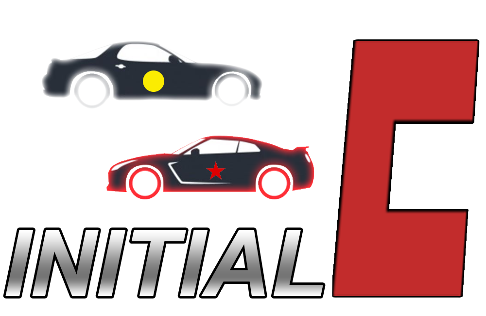

A Rotary Brother Production
An absolutely perfect account of the West Coast's Bay Area
Gub is a street racer who grew up in his hometown of America, USA. After his family is whisked away to the internment camp in Tokyopur, USA. Soon after, he sets out to create a new life for himself and discovers the asian art of Doriftu racing. As he lives out his high school career, he experiences new things like street racing and cheating, makes friends including the illustrious Iketani Mallah and the cocky but talented Takahashi Agala and ultimately, goes on a grand adventure. This is his tale- scroll down to read it.
How the story is structured on this website
The story is organized into different Chapters, each chapter having its own webpage. Within a chapter, you will find a button for the accompanying soundtrack. Make sure to listen to the soundtrack for the full Initial:C experience. Below, you will see the 3 most recent chapters in the spotlight sections, and below that you can view the full archive of all Initial:C chapters. Enjoy!
Takahashi Agala’s FD skidded laterally down the mountain road, miraculously countersteering just enough so that it didn’t careen into the guardrail and continued driving down the course. “I knew it,” he said. “If I get serious, nobody can keep up with me.” He checked his rear view mirrors, and in between all the RED STARS stickers, he saw no headlights. “Everyone here is still at that level.”

Upon arrival, Gub awakens and sees the great mount Mog in the Distance. So this was the only place outside of the city limits. As he looked out the window, he expected to see hot girls in S2Ks but instead saw mustachioed indian and asian girls playing the piano while sitting in the back of Mercedes and Lexuses. They were probably on their way to SAT class. ‘Charming’, he thought. This was going to be a little different from his expectation of the place.

AThe rain beats down heavily on the OnionRing at 4am in the morning. The wind is menial, the animals are silent. The only sound is the steady pitter patter of raindrops. Suddenly, a sound akin to what happens when you place a brick in a washing machine and set it to ‘heavy fabric’ roared out of the darkness; the familiar explosive tune of the Dodge HellSpawn SRTBBQ.

Every INITIAL:C chapter, in order.